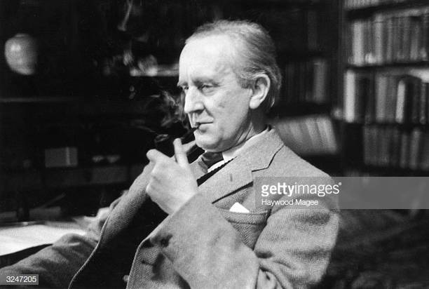

Tolkien and His Influence on Fantasy
and Science Fiction

"However, the modern fantasy genre is often considered to have begun with the works of J.R.R. Tolkien.
Tolkien's Arda, or Middle-Earth, became seen as the foundational fantasy story,
a standard to which other could be held" (Miller 7).